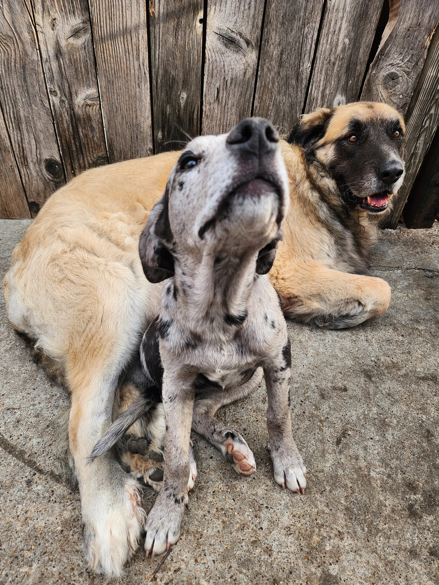

Our Story
90 dogs. 4 years.
One mission growing.
Over the last four years, JD Middleton has rescued nearly 90 dogs — mostly Great Danes — in partnership with Save Rocky the Great Dane Rescue and Rehab. Save Rocky has funded the vetting and found homes throughout that partnership, pulling dogs from North Texas shelters that would otherwise face euthanasia.
But JD kept running into the same wall: dogs pulled from local shelters arrive sick. Kennel-acquired pneumonia, kennel cough, skin conditions — a dog pulled today needs 10 to 20 days of quarantine before it can be housed safely with others. Without dedicated space, you can only pull a dog or two at a time. And while you're nursing one back to health, the next one runs out of time.
Rocky's Rescue Ranch Foundation exists to solve that problem — to build dedicated shelter space in North Texas so we can pull 10 to 20 dogs at once, run proper quarantine, and stop losing dogs to a system that wasn't built to save them.